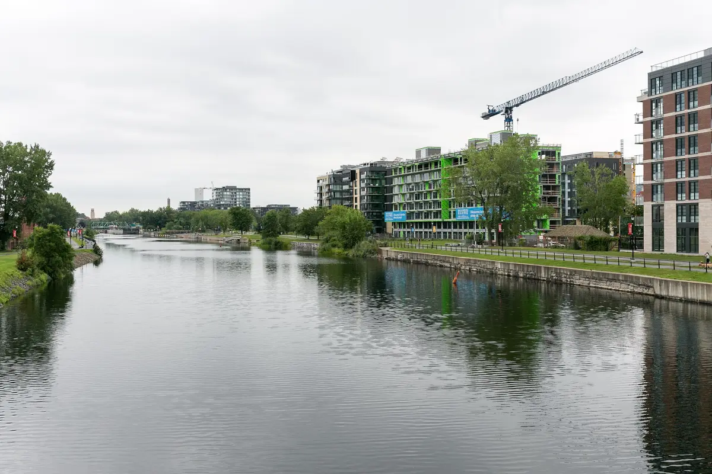

El canal de Lachine, del Viejo Puerto a Lachine
Actualizado el 21 de noviembre de 2026
Un camino llano junto al agua, a través de la historia del Montreal industrial: esclusas, fábricas de ladrillo convertidas en lofts, el mercado Atwater y el lago Saint-Louis al final.

- Distancia
- 14,5 km solo ida, del Viejo Puerto a Lachine
- Desnivel
- Casi nulo: es llano
- Duración
- Unas 3 h 30 solo ida a pie, o el tramo que quieras
- Dificultad
- Fácil
- Salida
- Viejo Puerto de Montreal, en la primera esclusa
- Temporada
- Todo el año
Mapa

Perfil de altitud

El recorrido
El canal empieza en el Viejo Puerto, junto a la primera esclusa, y va hacia el suroeste unos 14,5 km hasta Lachine. El camino sigue el agua todo el tiempo y se comparte con ciclistas: mantente en el lado peatonal.
Los primeros kilómetros pasan entre antiguas fábricas, silos y puentes, muchos convertidos hoy en viviendas y talleres. Para en el mercado Atwater a tomar un café o hacer un picnic junto al agua, y sigue hacia el oeste, donde el canal se ensancha y se vuelve más verde.
Al final, el canal se abre al lago Saint-Louis, en Lachine. No hace falta hacerlo entero: cualquier tramo es un buen paseo, de ida y vuelta.
Conviene saber
- Elige un tramo. Del Viejo Puerto al mercado Atwater hay ambiente; al oeste, más calma.
- Camino compartido. Con buen tiempo hay muchos ciclistas: camina por el lado y cuidado en los cruces.
- La vuelta. ¿Caminas solo de ida? Planea el regreso en transporte público antes de salir.
- Todo el año. El camino es bonito en todas las estaciones, y un buen paseo de invierno cuando los senderos están helados.
Fotos




Guarda el día con Arpente
Toca grabar al salir y guarda el iPhone en el bolsillo. Arpente dibuja tu recorrido y mide la distancia, el tiempo y el desnivel, incluso con la pantalla apagada. Añade una foto y una nota, y la salida queda en tu diario. Descubre Arpente.
Otras salidas
 Mont Albert11,6 km ida y vuelta por la cara norte, o un circuito de 17,3 km
Mont Albert11,6 km ida y vuelta por la cara norte, o un circuito de 17,3 km Acropole des DraveursUnos 10,4 km ida y vuelta hasta la primera cumbre, 11,2 km hasta la tercera
Acropole des DraveursUnos 10,4 km ida y vuelta hasta la primera cumbre, 11,2 km hasta la tercera Sentier de la StatueUnos 7,6 km ida y vuelta, o 3,6 km ida y vuelta hasta el mirador Bellevue
Sentier de la StatueUnos 7,6 km ida y vuelta, o 3,6 km ida y vuelta hasta el mirador Bellevue Mont RoyalUnos 1,4 km desde lo alto de la calle Peel al mirador, unos 2 km hasta la cruz
Mont RoyalUnos 1,4 km desde lo alto de la calle Peel al mirador, unos 2 km hasta la cruz
El trazado del mapa es orientativo, calculado con BRouter sobre datos de OpenStreetMap (© colaboradores de OpenStreetMap, ODbL); altitudes SRTM. No sustituye al mapa oficial del parque. Las distancias, desniveles y tiempos de la tabla vienen de fuentes de los parques: consulta las condiciones antes de ir.